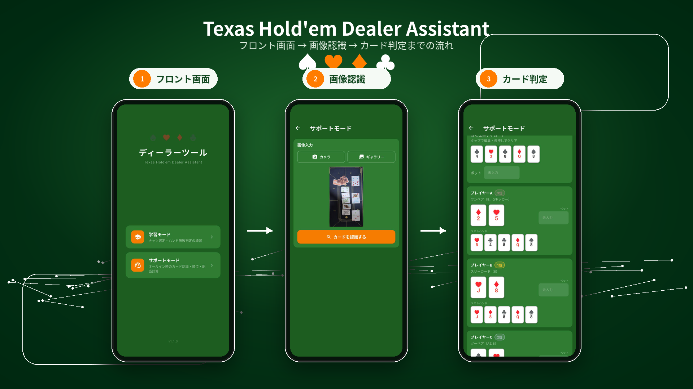
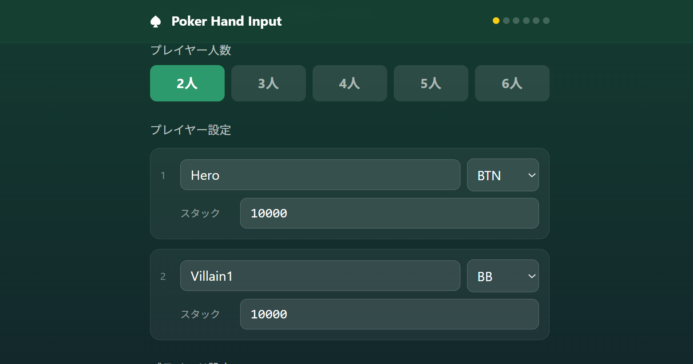
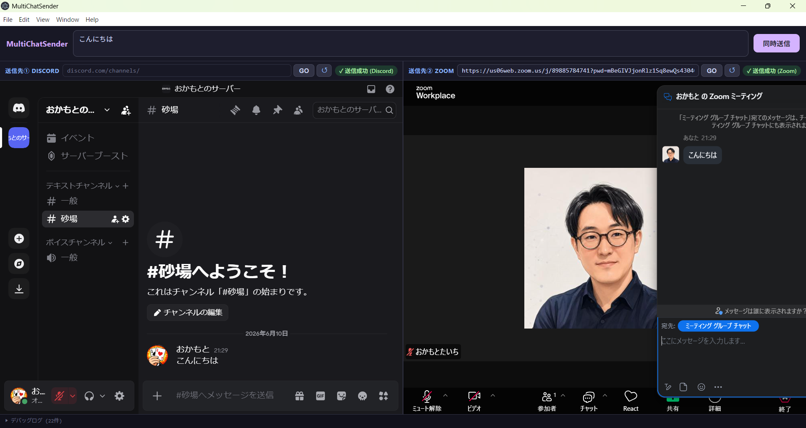
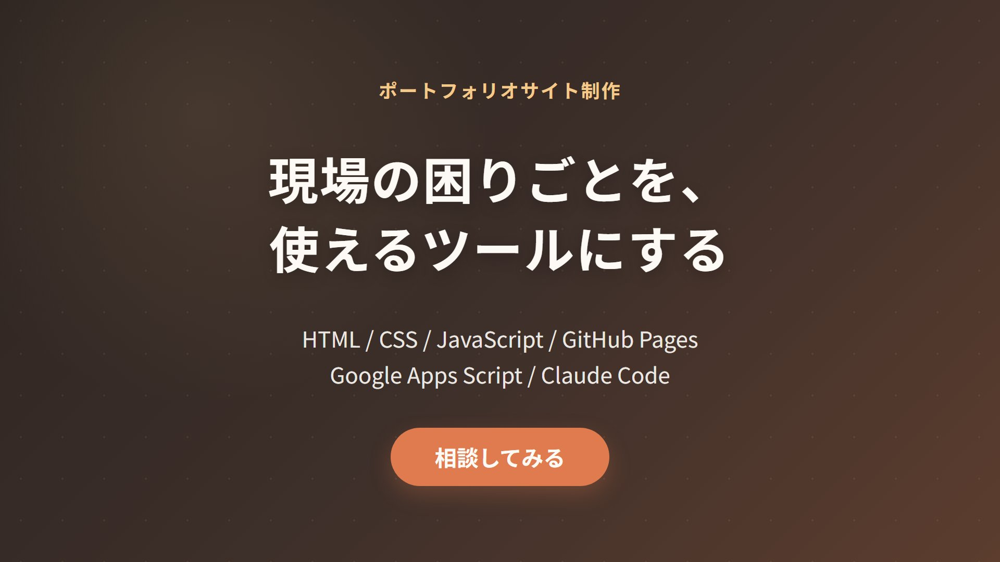

Embedded Engineer / App Developer
Excel作業の自動化、業務改善アプリ、AI活用相談など、
アイデアの整理から実装・テストまで対応します。
C/C++を中心とした大規模開発と店舗運営の両方を経験したエンジニアが、
非エンジニアの方にもわかりやすく伴走します。
C/C++を中心とした組み込み開発の実務経験を土台に、業務改善アプリや小規模ツール開発、AI活用相談まで対応するエンジニアです。
新卒からカーナビゲーション開発に携わり、要件定義・設計・製造・テスト・運用まで、大規模開発の一連の工程を経験してきました。現在も車載システム開発に携わっています。
一方で、ポーカーバーの店長として店舗運営の現場にも立ち、スタッフ教育や業務改善、経理まわりの仕組みづくりも行ってきました。エンジニアが、ポーカーバーの店長になって、またコードを書いています。
エンジニア目線だけでなく、現場で実際に使う人の目線も大切にしながら、「こんなの作れたら楽なのに」という段階から一緒に整理し、実際に使える形まで落とし込みます。
AIも積極的に活用し、仕様整理・試作・実装検証のスピードを高めています。ただし、AI任せではなく、エンジニアとして設計・実装・検証まで責任を持って対応します。
Excel作業、転記、集計、入力補助、記録管理など、日々の面倒な作業を減らすツールを作ります。小さく試せる形から作り、実際の業務に合わせて改善していきます。
ChatGPTやClaudeを業務にどう使えばよいか、一緒に整理します。文章作成、要約、分類、アイデア整理、簡易ツール化など、無理なく使える形に落とし込みます。
「何を作ればいいかわからない」「うまく説明できない」という段階から相談できます。必要な機能、画面イメージ、優先順位を整理し、実装できる形にします。
大規模開発で培った経験を活かし、作って終わりではなく、使いやすさや動作確認まで意識して開発します。小規模案件でも、仕様整理・設計・実装・テストの流れを大切にします。
業務改善・学習支援・自動化など、身近な課題を小さく使えるツールとして形にしてきました。




困っていること、作りたいもの、現在の作業内容を伺います。
必要な機能、画面イメージ、優先順位を整理します。
まずは小さく動く形を作り、方向性を確認します。
実際に触っていただきながら、使いやすい形に調整します。
動作確認を行い、必要に応じて使い方も説明します。
不安な場合はお気軽にご相談ください。対応範囲を一緒に整理します。
「こんな作業を自動化できる？」
「このアイデアはアプリにできる？」
「AIを業務に使ってみたい」
そんな段階からで大丈夫です。
内容が固まっていなくても、ヒアリングしながら一緒に整理します。
フルリモートで対応しています。平日夜・土日祝のご相談も可能です。送信後、数日経っても返信がない場合は、お手数ですが再度ご連絡ください。